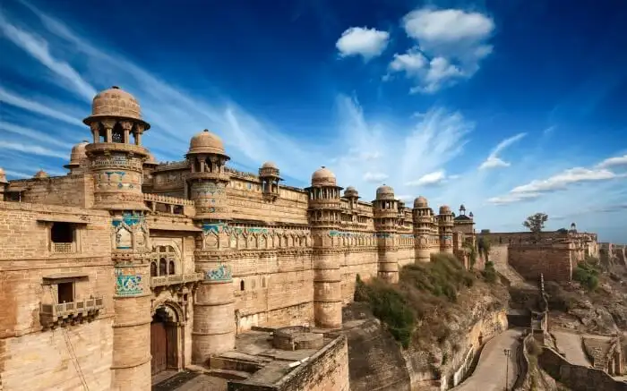
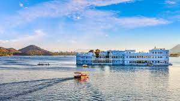

Hello! this side shubham kashyap a passionate travel blogger who loves discovering new cultures, tasting local foods, and sharing my journeys with the world. Join me as I wander through hidden gems and iconic places alike!
About Myself
Popular Destinations
India
The city of love and lights — explore the Forts, live the history, and indulge in world-class cuisine.
Udaipur
udaipur the city of lakes , experience the best lake of india
